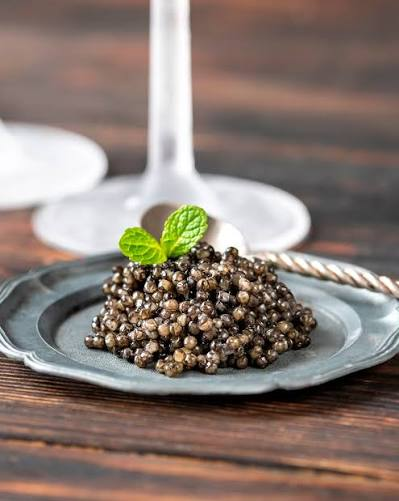

01Caviar
Pequeñas perlas, sabor profundo y una elegancia que habla por sí sola.
Una experiencia delicada
UNA EXPERIENCIA PARA RECORDAR
Ingredientes únicos, una cocina que honra su origen y momentos que merecen saborearse sin prisa.
Explora nuestra selección
NUESTRA CARTA
Cinco ingredientes protagonistas. Cada uno, una invitación a descubrir algo nuevo.

01Pequeñas perlas, sabor profundo y una elegancia que habla por sí sola.
 02
02
La frescura del salmón en dos expresiones, con un delicado toque de jengibre.
03
Una textura extraordinariamente suave y un sabor que merece toda tu atención.
 04
04
Dos clásicos con carácter, preparados para convertir la mesa en una celebración.
 05
05
Un tesoro aromático de temporada, apreciado por su perfume y profundidad.
CASA ÉLAN
Una cocina honesta, ingredientes extraordinarios y el gusto de compartirlos.
Volver al inicio